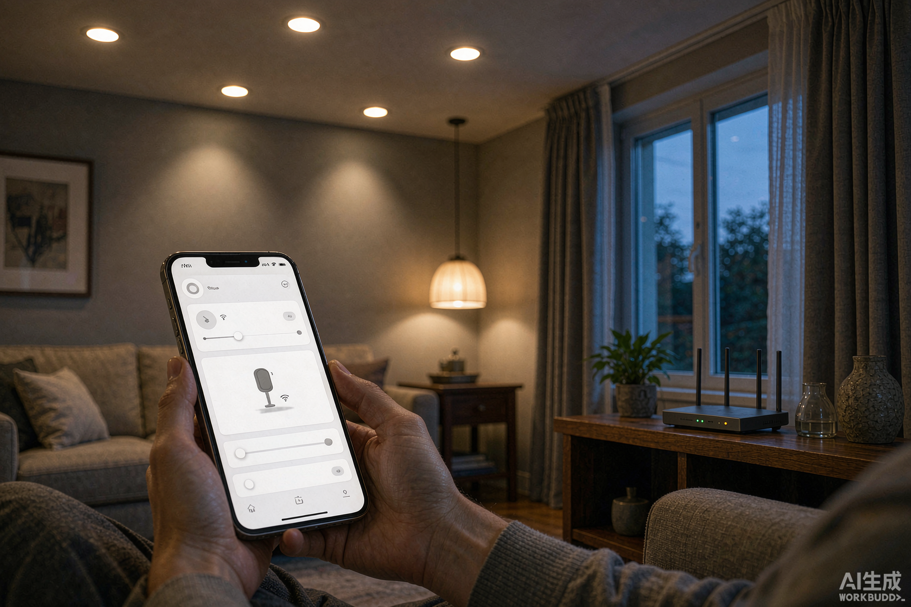

最近后台被问得最多的一句话是："灯装了不到三个月，动不动就显示离线，是不是灯不行？"
我干了十年照明，可以负责任地说：WiFi智能灯频繁掉线，七八成问题不在灯，在路由器。 灯具端的WiFi模块只负责一件最朴素的事——维持一条2.4G连接。真正让这条连接反复中断的，是路由器上那些默认"为你优化"的设置。今年各大平台Matter/Thread设备的掉线吐槽帖刷屏，连媒体压力测试都测出过50%的配对成功率，归根结底都是同一批网络病根。
今天就按出现频率，把5个最常见的路由器病根一次讲透。
病根一：双频合一，让灯在两个频段之间"蹦极"
这是新手掉线排第一的原因。现在主流路由器默认开启"双频合一"——2.4G和5G共用一个WiFi名称，由路由器自动决定你的设备连哪个。手机电脑无所谓，但几乎所有WiFi智能灯只支持2.4G频段，而路由器为了"提升体验"，会不断尝试把设备往5G上引，结果就是灯反复被踹下线。
解法：进路由器后台，把双频合一关掉，拆成两个独立名称（如 Home 和 Home-IoT），灯和所有智能设备只连2.4G那个。
病根二：信道设成了"自动"，邻居一开路由器你就堵
2.4G频段只有1、6、11三个互不干扰的信道，可大部分路由器默认"自动选信道"。在楼房密集的小区，邻居的路由器一多，你的信道就是早高峰的地铁。更糟的是部分路由器默认40MHz频宽，进一步压缩了可用信道。
解法：信道手动固定到1、6、11中最空的一个（用WiFi分析App扫一下就知道），频宽固定20MHz。智能设备不需要带宽，需要的是稳定。
病根三：DHCP租期太短，灯的"门牌号"被收回了
很多人忽略这一条。路由器默认的DHCP租期可能只有1-2小时，租期一到设备要重新续约。智能灯是低功耗设备，续约时机稍有不慎就掉线，而且表现为"莫名其妙离线，重启又好了"。
解法：把DHCP租期调到24小时以上，给灯、网关、摄像头这些固定设备做静态IP绑定，一劳永逸。
病根四：带机量超限，路由器不是装多少带多少
一台入门级路由器标称"百兆千兆"，但2.4G频段的稳定带机量往往只有二三十台。手机、电视、电脑再加上几十盏灯、插座、传感器，设备列表拉到底你自己都吓一跳——超载之后，最先被踢下线的永远是最"弱势"的智能灯。
解法：设备超过25台，就做专网隔离。用一台旧路由器挂在主路由LAN口下，单独发一个只给智能设备用的SSID；没有旧路由就开访客网络凑合（注意确认访客设备之间允许互访，否则网关联动会失效）。
病根五：网关位置不对，Zigbee灯一样遭殃
Zigbee/蓝牙Mesh的灯不连WiFi，但它们要靠网关中转——网关掉线等于全屋灯集体罢工。两个高频错误：一是把网关塞进弱电箱或金属柜，金属外壳等于给它盖了个罩子；二是网关离最远的房间隔着两三堵承重墙。另外Zigbee和WiFi共用2.4G频段，信道撞了会互相干扰，表现为灯响应延迟一两秒。
解法：网关放在房子的几何中心、开放置物架上，到每个房间尽量只隔一堵非承重墙；WiFi信道如果是1，就把Zigbee信道改到15以上。一台网关带30台以内设备，超了就楼上一台楼下一台分区带。
到底该买WiFi版还是网关版？
| 场景 | 建议 |
|---|---|
| 只买一两盏灯，家里没网关 | WiFi版，省下网关钱 |
| 计划装3盏以上，或路由器已带20+设备 | 网关版（Zigbee/蓝牙Mesh），不占WiFi带宽 |
| 大平层/别墅，设备几十台 | Mesh路由+网关分区，弱电箱预留网线 |
| 路由器反复救不活 | 换带OFDMA的WiFi 6路由，对"只发小包"的物联网设备友好得多 |
一句话总结：灯多路由器扛不住的，先做减法（分频、专网、错信道），再考虑换硬件。 把这5个设置改完，你大概率会发现——灯其实一直是好的。